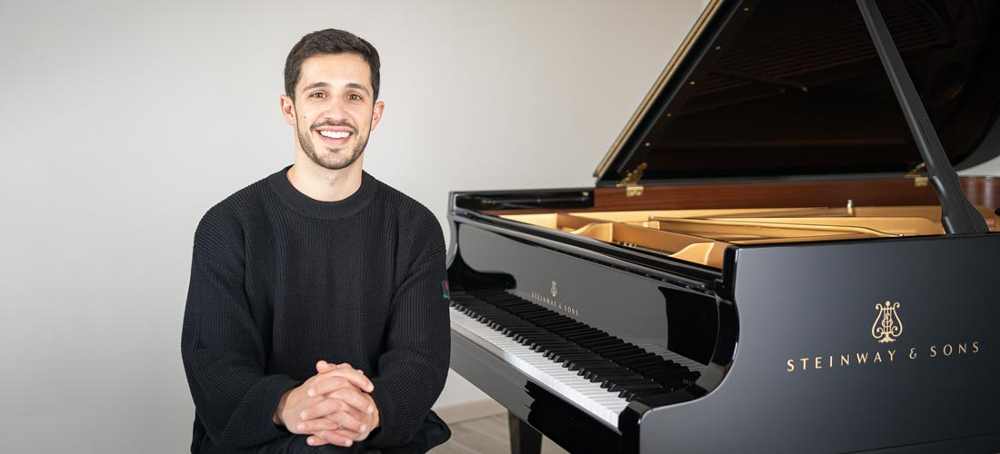

Francesco Parrino

Summary
- Francesco Parrino is an Italian classically trained pianist and composer who creates musical arrangements by ear.
- He began playing the piano at the age of 4 and eventually graduated summa cum laude with a Bachelor of Music in Classical Piano at the prestigious Arrigo Boito Music
Conservatory in Italy.
- In June 2011, he opened his official YouTube channel, and in December 2018, he launched an additional Extras Channel.
Education
Graduated summa cum laude with a Bachelor of Music in Classical Piano at the prestigious Arrigo Boito Music Conservatory in Italy.
Digital Media & Online Presence
- On his Youtube channels, he uploads a variety of piano adaptations from radio and movie soundtracks.
- Francesco crafts his own scores, ensuring they faithfully represent the music showcased in his YouTube videos,
and they are available exclusively on Musicnotes.com.
Piano Albums & Releases
- In September 2017, he released his first album “Piano Covers” on all major online platforms and has been expanding his catalogue ever since.
- In 2023, he released a piano solo studio recording of Rachmaninoff's Piano Concerto No. 2.
- In 2024 he also released his 16th covers album, featuring his most recent work, such as Just The Way You Are, Father And Son, Die With A Smile and Forever Young, among others.
Performance & Collaborations
- In February 2020, Francesco was invited to join the official roster of Steinway & Sons artists and was featured in the “Steinway Spirio” catalog with over 200 tracks.
- Francesco is also a sought-after guest artist, becoming a Guest Artist for Explora Journeys. In 2024 and 2025 Francesco participated in several piano festivals, including Candlelight concerts.
- In 2025, Francesco was featured in the Italian debut of the Steinway & Sons x Disney Mickey Mouse Limited Edition piano, collaborating with renowned designer Elena Salmistraro.
Skills
- Piano Performance ⭐️⭐️⭐️⭐️⭐️
- Music Arrangements ⭐⭐⭐⭐⭐
- Digital Content Creation⭐⭐⭐⭐
Check out More